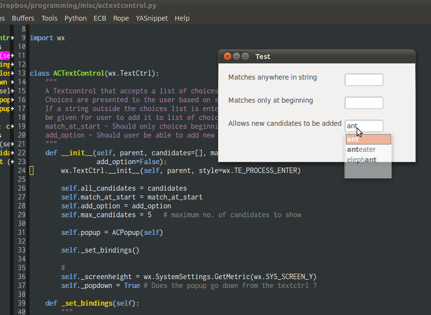

Textcontrol with smart autocompletion for wxpython
For my own use I needed a text entry widget in wxpython that allows smart autocompletion from a list of choices. By smart autocompletion, I mean choices should be displayed in a dropdown box and text entry should narrow down to matching choices. Match should be configurable to beginning only or anywhere within the string. Starting off from this, I wrote my own textcontrol widget with autocomplete. A list of choices can be passed to the widget and matches can be configured. Check it out on github.

Comments
Comments powered by Disqus